Wordmark library / 02
Aberratio
Retained alternative
The merged-ti experiment, preserved alongside the current Aberration identity. Moving the t stem left makes the lower body of ti match the 44-unit width of b.
01
Merged ti / Matched bodies
The t stem sits flush with the crossbar. Both lower bodies are 44 units wide.



02
Earlier compound / Reference
The merged crossbar extends left of the stem. Its lower body is 34 units wide.



b / Reference
44-unit body
ti / Matched
44-unit body
ti / Earlier
34-unit body
Matched bodies / 240 px
Earlier compound / 240 px